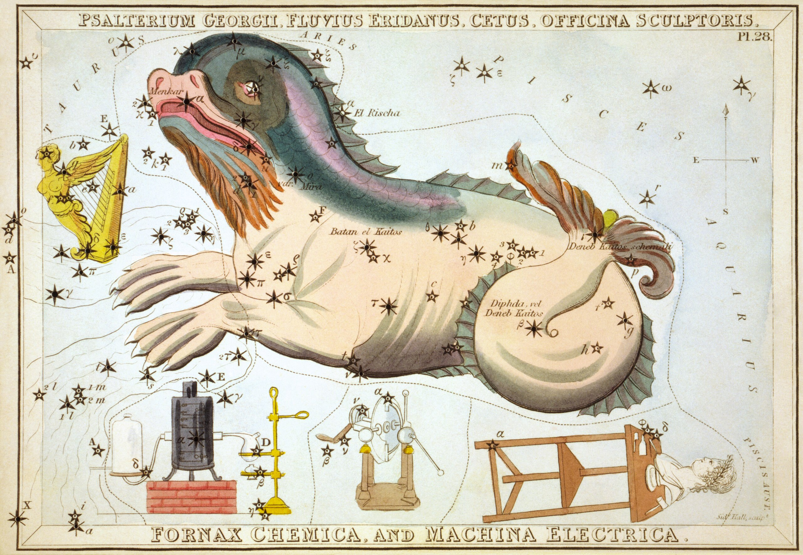

Eridanus (eh-RID-anuss), officially the Republic of Eridanus, is an autonomous independent microstate located within the territory of Australia, specifically the state of New South Wales.
Eridanus is located in the Greater Sydney region in a patch of dense bushland, covered by tall Eucalyptus trees and Bracken ferns, and surrounded by several streets. Cutting through Eridanus is the Creek River, the main source of water for the nation.
The word 'Eridanus' comes from the constellation of the same name, which is represented as a river. This celestial river is one of the largest constellations in the sky, stretching from the star Cursa near Orion all the way to Achernar in the far southern sky.
Cetus, the Sea Monster, dipping his toes in the Eridanus
The river is best associated with the myth of Phaëton, the son of the Sun god Helios. According to legend, Phaëton begged his father to drive his chariot across the sky continuously until Helios obliged. He was instructed to follow the beaten path where he could see wheel marks.
Unfortunately, Phaëton was too inexperienced to control the chariot, and lost control. The chariot flew so close to Earth that the lands caught fire. Zeus had to intervene, striking Phaëton down with a thunderbolt, and causing him to fall into the Eridanus. The river is also associated with the Nile, the only river that travels south to north.
Our Creek River might not be as grand as the celestial river of Eridanus, but it holds a special place in the hearts of Eridanese everywhere.
Full name: Republic of Eridanus
Provinces: Achernar
Area: ~3500m2 (at time of writing)
Population: 1 (at time of writing)
Highest Point: TBA (survey underway)
Timezone: AEST (UTC +10)
Climate: mild, cool winters and hot summers, well defined seasons
Currency: AUD (at time of writing)
Official Language: English
Denonym: Eridanese
Official Religion: No state recognised religion
Life Expectancy: 84.5 Years